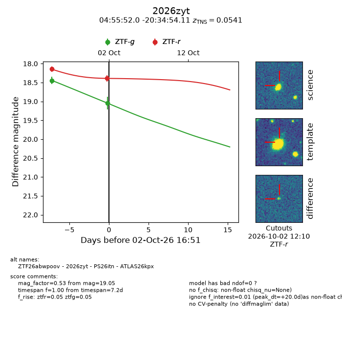
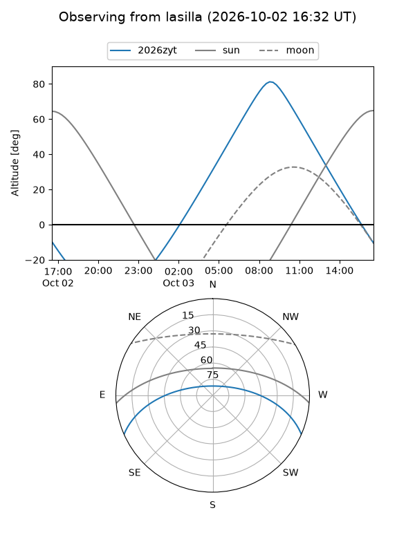
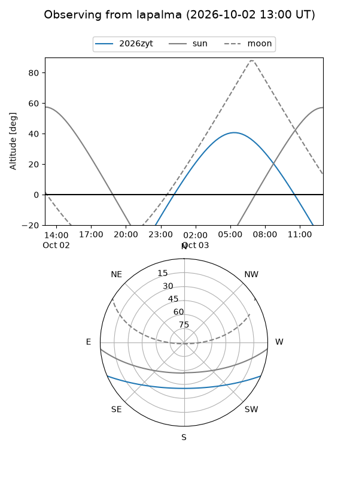
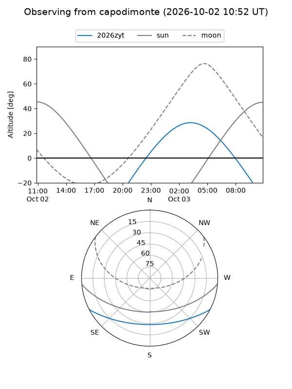
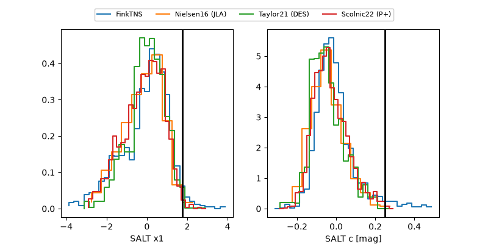

2026zyt
Target 2026zyt at 2026-10-02 16:53
Aliases and brokers:
FINK-ZTF: ztf.fink-portal.org/ZTF26abwpoov
Lasair-ZTF: lasair-ztf.lsst.ac.uk/objects/ZTF26abwpoov
ALeRCE-ZTF: alerce.online/object/ZTF26abwpoov
YSE-PZ: ziggy.ucolick.org/yse/transient_detail/2026zyt
TNS name: wis-tns.org/object/2026zyt
Direct TNS query: direct search
alt names
ZTF26abwpoov (ztf,fink_ztf)
2026zyt (tns,yse)
ATLAS26kpx (atlas)
PS26itn (panstarrs)
Coordinates:
equatorial (ra, dec) = 73.9667,-20.58170
equatorial (HMS+DMS) = 04:55:52.01,-20:34:54.11
galactic (l, b) = (220.3429,-34.25437)
Flags:
TNS type: SN Ia
TNS redshift: 0.0541
peak dt: +20.0
Photometry:
last ztfg=19.05, ztfr=18.39
2 ztfg, 2 ztfr detections
Lightcurve

Visibility



Additional plots
